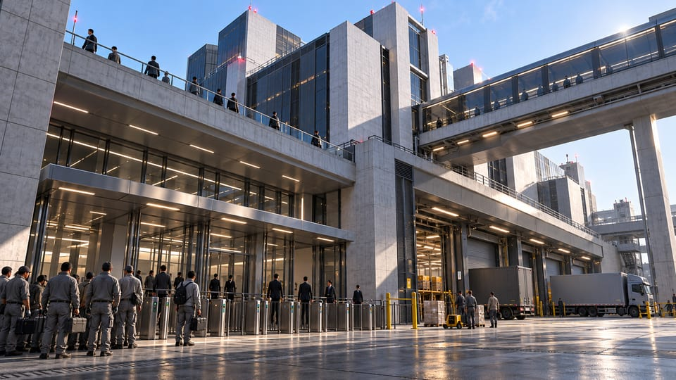

地域移行完了
地域資産の移行後、別館は引受管理者の下で運用されています。保持された移動指示に基づき流通は再開しました。この移行は施設に対する組織の管理を確立するものであり、個別の任用には記録された範囲を適用します。

アラサカの地域展開は、警護サービスと日本製品の流通を北米の事業に結びます。別館では、荷受けホールと職員入口が、異なる指示の下で同じ建物につながります。上階の連絡橋は部門を結び、地上の窓口はそこへ入る者を確認します。
地域資産の移行後、別館は引受管理者の下で運用されています。保持された移動指示に基づき流通は再開しました。この移行は施設に対する組織の管理を確立するものであり、個別の任用には記録された範囲を適用します。
貨物の予約と職員の資格証は、異なる記録です。警備は、見知った顔を指示として扱わず、それぞれを責任部門に確認します。搬入予定の再開によって、内部装備を維持する人々の権限が自動的に更新されるわけではありません。
保守勤務表、設備棚の鍵、引き継ぎ後の最初の勤務は、一つの組織記録の一部になります。地域部門は完了の公表とともに例外を保持します。荷受けホールが再開した後、窓口に残された問いも、その責任に含まれます。
組織のつながり